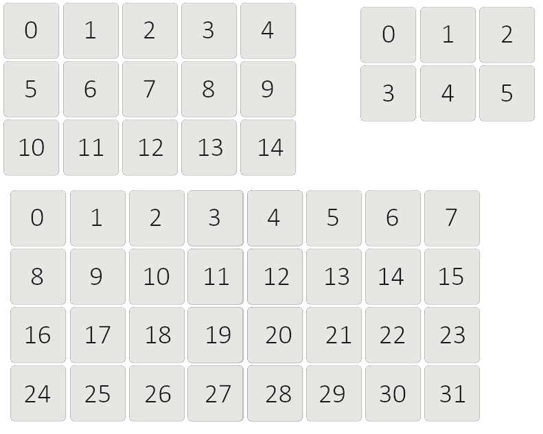

Streamduck
Streamduck is open-source software for managing Elgato Stream Deck devices
Goal
This software is striving to let users unlock full potential of their Stream Deck devices. Extensibility is the main focus for Streamduck core
Installation
Process of installing the software is described in this section
Node Client
Reference API to Node.js client can be found here: API Reference
Support
If you're looking for assistance with Streamduck, you may want to join the Matrix discussion here:
If you don't use Matrix there is also a Discord chat:
Matrix chat
You can join the whole Matrix community here:
Using Installers
There's an installer currently for Windows only, you can get it from the Releases page
The installer installs the daemon with all the necessary configuration to it, and additionally a CLI client too
After installation, you can check daemon configuration page in case you want to change any of the settings of the daemon, you can check CLI usage page to learn more about the CLI client.
You should check out GUI installation page, if you want a graphical interface. Recommended for Windows users
The daemon is usually installed into Program Files on Windows in a folder called Streamduck
Linux setup script will be eventually available, for now Linux users have to use the cargo way
Using Cargo
Streamduck is published on crates.io, Rust language's package repository.
Make sure you have Rust toolchain installed
If you don't have it installed, install it from here: rustup.rs
The project is using 1.59 version of Rust compiler.
Dependencies
Compilation of the project requires libusb and on Linux - libxdo. You can install the dependencies using following command on Ubuntu:
sudo apt update
sudo apt-get install libusb-1.0-0-dev libxdo-dev
Arch:
pacman -S libusb xdotool
On Windows it should pull the dependencies automatically if Windows updates don't break anything
Cargo
Once you have up to date version of Rust toolchain, use following command to install Streamduck daemon from crates.io:
cargo install streamduck-daemon
Git repository will usually have the latest code, but not always the most stable. If you want to install from git repository:
cargo install --git https://github.com/streamduck-org/streamduck.git streamduck-daemon
Udev rules
This is required only for linux users.
It's required to add udev rules to be able to connect to HID devices without having root access.
To install udev rules for Stream Deck devices, use following commands:
wget https://raw.githubusercontent.com/streamduck-org/streamduck/master/sh/40-streamdeck.rules
sudo mv 40-streamdeck.rules /etc/udev/rules.d/
sudo udevadm control --reload-rules
sudo udevadm trigger
Getting started
This is required only if you used manual methods, if you installed Streamduck with an installer, it should have already done this
1. Dedicate a folder for daemon
Create a folder somewhere where Streamduck will be keeping device configs and everything related.
2. Run Daemon in the folder
Navigate to the folder with cmd/terminal and run streamduck_daemon
This will start the daemon, and it should already be usable at this point.
(Optional) 3. Autostart the daemon
Windows
Autostart is done automatically by the installer for Windows. Uses registry keys to do that
Linux
This can be either done by having your Desktop Environment run the daemon on start, or using a user systemd service.
Systemd service example:
[Unit]
Description=Streamduck Daemon
[Service]
WorkingDirectory=PATH_TO_STREAMDUCK_FOLDER
ExecStart=PATH_TO_STREAMDUCK_DAEMON_EXECUTABLE
(if installed with cargo, should be /home/<user>/.cargo/bin/streamduck_daemon)
[Install]
WantedBy=default.target
The service should be installed in ~/.config/systemd/user/
Following commands can be used to add the daemon to autostart and run it:
systemctl --user enable streamduck-daemon.service
systemctl --user start streamduck-daemon.service
Configuration
This page explains a bunch of different things that can be configured in the Streamduck daemon.
Configuration folder:
- Linux:
$XDG_CONFIG_HOME/streamduckor$HOME/.config/streamduck - MacOS:
$HOME/Library/Application Support/streamduck - Windows:
{FOLDERID_RoamingAppData}/streamduck(%APPDATA%/streamduck)
This folder has to be manually created.
If your system is not supported, it will use the current working directory
Configuration file
File config.toml should be located in your configuration folder, if it doesn't exist, create one if you want to change anything.
You can use a different location with the
--config-pathoption
Streamduck uses default values for config values if they don't exist, so you don't have to add everything if you just want to change pooling rate. Default values are used in examples.
Here's what you can change using the config file:
Autosave
This enables or disables the automatic device config saving.
The parameter accepts true or false.
autosave = true
Frame rate
This determines frame rate of animated images.
The parameter accepts positive integers. The larger the number, the more FPS you'll be able to get.
frame_rate = 100
Reconnect rate
This determines how often Streamduck will be checking for disconnected devices.
The parameter accepts seconds in positive float format.
reconnect_rate = 1.0
Plugin compatibility checks
This allows plugins to skip the compatibility check. This could crash the application if incompatible plugins are used.
The parameter accepts true or false.
plugin_compatibility_checks = true
Device config path
This tells Streamduck where to keep device configs, folder will be created if it doesn't exist.
device_config_path = "./devices"
Fonts path
This tells Streamduck where it should seek for fonts. If there's no folder at path, nothing will be loaded.
font_path = "./fonts"
Plugins path
This tells Streamduck where it should seek for plugins. If there's no folder at path, nothing will be loaded.
plugin_path = "./plugins"
Plugin settings path
This tells Streamduck at what path it should create json file for keeping settings of plugins.
plugin_settings_path = "./global.json"
Custom fonts
Custom fonts can be installed by creating a folder called fonts in your configuration folder (or whatever was specified in font_path), and dropping in .ttf or .otf files.
Fonts will be automatically loaded on next run of the daemon, and will be available to be selected in Streamduck clients.
Plugins
Plugins can be installed by dropping dynamic library files (.dll or .so for respective platform) into plugins folder inside your configuration folder.
Plugins will be automatically loaded on next run of the daemon. If any error happens during plugin loading, it will be logged by the daemon. So if something doesn't work, check logs of the daemon and find out.
Explanation of Core Design
A bit of explanation needed to make sure you understand how Streamduck works, it's different from the official software
Components instead of button types
Instead of having only one thing a button can do, Streamduck's buttons are containers of components. Many components can be put on a button, which makes a single button perform a bunch of different actions at once
Components are unique however and there cannot be multiple of same components on a single button. The component should itself support multi-action if it needs to, implementations of multi-actions similar to official software will arrive later
Plugins are everything
This software was designed with extensibility as main goal, the software has only essential functionality out of the box. Everything else that you might want will be added by plugins
This allows the project to thrive even when the core stops being actively developed. Plugins can really do a lot of things with this software
Images are part of device configuration
Images are kept inside of device configs as collection of identifiers to binary data
This allows device configs to be self-contained and not rely on any external files, this also enables images to be uploaded over network using WebSocket
Clients are only messengers
Everything you do with Streamduck is managed by the daemon, clients only tell daemon what to do
So even if you decide to copy a button and close the client, the clipboard for buttons is kept on the daemon side. No progress will be lost, and you can even open a different client and paste from there, and you'll observe the button you copied from different client
Due to focus of separately having a daemon, clients are considered separate projects. The main project is the core and daemon
Devices are not automatically managed
Unlike official software, Streamduck will not automatically manage all found Stream Deck devices, you need to tell the daemon to manage the device
This was made with assumption that someone might be using Stream Deck for some other purpose, and to avoid conflicts, the user should tell the daemon to manage the device, and not the daemon deciding to automatically take the device
Conclusion
Some more information will be explained in documentation of the clients, proceed to CLI or GUI section
Backup
This page explains what you have to do to completely backup Streamduck data
Device configs
Device configs contain all the information that is related to the device including button layout, images, plugin data
Configs can be either exported with your client of choice, or saved by making a copy of device config folder
Plugins
If you're using plugins, you should back up plugins folder
Plugin settings
Plugin settings file contains all settings of plugins/modules including settings of core module, it should be backed up for plugins to remember their global settings
Using Cargo
Streamduck CLI client is published on crates.io
Dependencies
Streamduck CLI shares dependencies with Streamduck project, so refer to this section
Cargo
Use following command to install Streamduck CLI from crates.io:
cargo install streamduck-cli
In case if you want the latest possibly unstable code from Git repository, use following command:
cargo install --git https://github.com/streamduck-org/streamduck.git streamduck-cli
Usage
This page explains how to get started with Streamduck through a CLI client
Add your device
Before you can do anything, you need to tell daemon to manage your device
Run the CLI in your terminal/CMD
streamduck-cli
List devices found on your computer
device list
If you don't see any devices, make sure your Stream Deck is connected. If you're on Linux, make sure you've installed Udev rules as explained in this section
Add your device using serial number
device add <serial number>
Select your device
CLI requires a device to be selected before any of device commands can be executed, you can do this by using this command:
select <serial number>
Configure your layout
You can now configure layout of your buttons and components however you want. You can find all the commands explained here
Make sure you save
Your layout will persist until the daemon gets shut down, if you want to save it, so it will remain longer than that, use following command:
config save
It will save config of currently selected device, if you want to save all devices:
config save all
Commands
This page explains all the commands available in CLI
Device commands
Commands for controlling Stream Deck devices
device list
Lists all available and managed devices
device add <serial number>
Adds specified device to managed device list, you can tell the device is managed if Elgato logo has disappeared
device remove <serial number>
Removes specified device from managed device list
Module commands
Commands for modules and components
module list
Lists all modules loaded by the daemon
module info <module name>
Shows some more information about specified module
module params
Contains commands for manipulating module parameters, explained in depth in following page
component list
Lists all components added by loaded modules
component info <component name>
Shows some more information about specified component
Font list command
Following command shows list of loaded fonts
font list
Installation of custom fonts is explained in this section
Selection command
Following command tells the CLI that you want to work with specified device. Current selection is specified on left from prompt arrow
select <serial number>
All following commands require a device to be selected
Key index reference
Reference for key indices that CLI uses: 
Navigation commands
Commands for some navigation that can be done through CLI
press <key index>
Simulates a press on a button, same thing as if a button on Stream Deck was pressed
back [drop]
Goes back in screen stack, if using folders, it will do same thing as Folder Up component. If drop word is added to make back drop, will drop to root screen
stack
Prints current stack of the device, which is usually the path you took with folders
Configuration commands
Commands related to device configuration
brightness <0-100>
Sets brightness of the device to specified value. 0 would disable the backlight
config save
Saves device config to permanent storage
config save all
Saves device configs of all managed devices
config reload
Loads device config from permanent storage, overrides current state of the device
config reload all
Loads device configs of all online managed devices, overrides their current states
config export <path>
Saves device config into specified path, can be used to copy and paste configurations between devices, can be used also for backup
config import <path>
Loads device config from specified path, overrides current state of the device
Image commands
Commands related to image collections, some explanation is provided here for what this is
image list [preview size]
Shows list of saved images on the device with colored preview for each
Size of the preview can be controlled by providing a number representing length of the preview square's side in pixels
Previews are only supported on true color terminals, cmd will see only jibberish, this might be fixed in later updates
image add <path>
Uploads image from specified path into Streamduck daemon, to be used later by button rendering
image remove <identifier>
Removes image from image collection of the device, identifier can be looked up from image list or saved from moment of adding the image, as image identifier is printed as image is uploaded
Button commands
Commands related to manipulating buttons on current screen
button list
Lists buttons on current screen, some can appear there that cannot be seen on the Stream Deck screen, which usually means there's a button without a renderer component
button info <key index>
Shows detailed information on specified button, which also includes list of components that the button has
button new <key index>
Creates a new empty button on specified key, it will not have a renderer component, so for the button to appear visually on Stream Deck screen, add renderer component with following command
button from <key index> <component name>
Creates a new button using specified component as a template, comes with renderer as defined by the component
button copy <key index>
Copies specified button into daemon's clipboard, to be later pasted by next command
button paste <key index>
Pastes a button from daemon's clipboard onto specified key
Plugins get to handle this command, so in case of folders, you'll get a copy of the folder on the new button
button remove <key index>
Removes button from specified key
Additionally, components might perform more cleanup, folder components will also delete folder data associated
button component add <key index> <component name>
Adds a component onto specified button, does not create a button if it doesn't exist
See this command to know what components are available
button component remove <key index> <component name>
Removes specified component from the button, performs some cleanup in case component requires it
button component params
Contains commands for manipulating component parameters, explained in depth in following page
Component Parameters
Component parameters represent things that components allow you to change, renderer component allows you to change the way the button will look like and etc.
Streamduck has 2 things that support parameters - module settings and component parameters
Listing parameters
To list parameters of a module or component, you can use following command depending on which of the 2 you want to check:
button component params list <key index> <component name>
or
module params list <module name>
After running the command, you'll see a list of all parameters that the component or module provides, each parameter will have a name, description, path, type and current value
Parameter types
Parameters come in all various ways and each accept different inputs, you can refer to this table to see what parameter type accepts what
| Type | What it accepts |
|---|---|
| Header | Doesn't accept anything, just large text for UI to render |
| Label | Doesn't accept anything, meant to be a small textbox that cannot be changed |
| Float | Accepts decimal fractions, example: 0.1; 35; 6546.241253 |
| Integer | Accepts whole numbers, example: 3; 6783; 3153; 53 |
| String | Accepts any text, spaces don't need to be escaped |
| Float2 | Accepts 2 decimal fractions one after the other, example: 0.1 0.2 |
| Integer2 | Accepts 2 whole numbers one after the other, example: 1 2 |
| Positive Integer | Accepts a positive whole number, negative numbers will get an error |
| Choice | Accepts a choice from predetermined ones, need to be written as they were specified in the parameters list, spaces don't need to be escaped |
| Boolean | Accepts either true or false |
| Color | Accepts 4 numbers in succession with range from 0 to 255, example: 255 35 0 255 |
| Submenu | Doesn't accept anything, meant to be just a submenu in UI for organization of parameters |
| Array | Doesn't accept anything on its own, see following section for more info on arrays |
| ImageData | Accepts base64 data that represents image binary data of supported format, you can insert base64 string here, or use upload command |
| ExistingImage | Accepts image identifier of an existing image, see image list command to get identifiers for uploaded images |
| Font | Accepts font name, see font list command for font names |
Setting parameters
After you figured out what you want to set, copy the path of the parameter and see what you can set to it based on the table above, you can use following command to set parameters
button component params set <key index> <component name> <path to parameter> <value to set>
or
module params set <module name> <path to parameter> <value to set>
If the value you want to set is the text kind, spaces will be preserved, so everything after the path will be the value
Uploading images into parameters
You can use following command to upload images as parameter value, only supported by ImageData type
button component params upload <key index> <component name> <path to parameter> <path to file>
or
module params uplaod <module name> <path to parameter> <path to file>
Dealing with arrays
Arrays represent parameters that can have multiple elements. You cannot set to array directly, but you can add elements to it, remove elements and set values to its elements.
Adding elements to arrays
You can add elements to arrays using following command, path to the array means you need to copy path of the parameter that has the type Array
button component params add <key index> <component name> <path to the array>
or
module params add <module name> <path to the array>
This will add a new element at the end of the array
Removing elements from arrays
Use following command to remove elements from arrays
Index of the element can be inferred from the path, as elements of arrays get suffixed with a number which represents their index. So text_params.text.0.text means the parameter is located in element with index of 0
button component params remove <key index> <component name> <path to the array> <index of the element>
or
module params remove <module name> <path to the array> <index of the element>
Using pre-packaged binaries
Binaries are available for Windows and Linux users on the release page of Streamduck GUI project
Windows
Windows users get a setup executable, running the setup will automatically install the GUI and open it after
Shortcut will be added to start menu and the GUI can be launched from that
Linux
Linux users get a self-contained AppImage which can be executed to bring up the GUI client, as simple as that
If you prefer, it can also be placed into .local/bin if you want to be able to launch if from terminal, or you can create a desktop file for it for more convenient way of launching the GUI
Building from source
The GUI can be also built from source. The GUI runs on NodeJS v16, make sure you use that version, other versions might not work.
- Clone the repo using following command
git clone https://github.com/streamduck-org/streamduck-gui.git
- Install dependencies using following command
npm install
- Build or serve the GUI, depending on if you just want to run the GUI, or get a package
npm run electron:serve
or
npm run electron:build